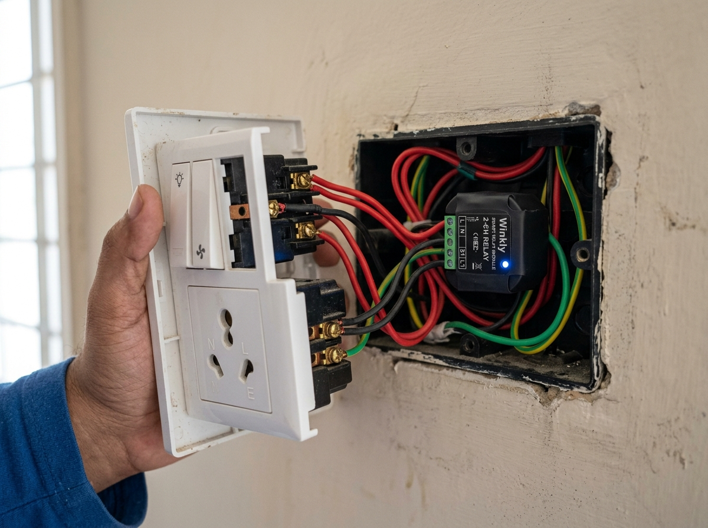
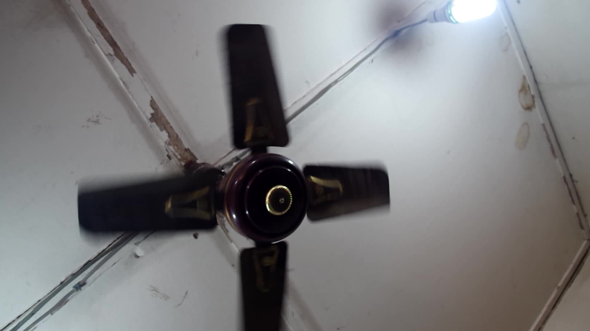

Three patterns, one server, three switch plates
A pattern-based automation reference for an Indian apartment. Identifying three uniform room patterns: timer-driven hall lighting and fan (no sensors needed), mmWave radar-driven study light and fan, and door-triggered bathroom lighting and exhaust fan. Each room pattern has its own in-wall Aziot 3+1 Fan Smart Switch plate preserving physical wall switches, orchestrated locally by Home Assistant on a Radxa Zero 3E.
Hall, Study room, Bathroom.
1 dedicated plate per room.
All 3 patterns implemented.
Pure timer-based automation.
The five components
Each part of the build has its own page, its own ID and its own test evidence. Change a part inside one and it becomes a new component with a new ID: a battery claim proven on PS-1 does not carry to PS-2. Hover a row to see the part.
How it fits together
How the work runs
Five moves, in this order. Each one is cheap to fail at, and each one settles a doubt that would otherwise be discovered after the money is spent. Drag the row.

Flash Sentinel UF2
Double-click reset on Seeed XIAO; drag-and-drop zephyr.uf2 to XIAO-SENSE. Assembly.

Wire & pair via Matter
Connect radar, battery, and scan QR code in Home Assistant over Thread. Procedure.


Fit the plate
Electrician, neutral confirmed, relay rating in writing. Every relay toggles with the WAN out. Aziot switch.

Mount away from the fan
A spinning fan looks like a breathing person to radar. Side wall at 2.2 m. Placement.
Open items status
Verification Summary
- Presence sensor (PS-1): Fully specified on the Sentinel open-source architecture (Seeed XIAO nRF52840 + Matter-over-Thread + HLK-LD2410S, 4–5 months battery life). Video guide · GitHub · Details.
- Thread border router: Commission ESP32-H2 USB radio with OpenThread RCP on Radxa Zero 3E. O-07.
- Remaining purchase gate: Aziot plate local control (O-10) and neutral/inrush confirmation (O-11) with electrician.
Read all 12 items and evidence criteria on Open items. Pattern hardware is detailed on the buy list.
The total, and what it is made of
₹8,915
Complete reference bill of materials for all three apartment patterns with uniform in-wall switch plates, with Radxa Zero 3E, power adapter, MicroSD card, and Dupont jumpers already on hand. ₹3,133 for Phase 1 (Study sensor + Thread gateway); ₹5,782 for Phase 2 (3× Aziot 3+1 switch plates + Option 1 DIY Matter-over-Thread door sensor). Plus electrician labour.
Specification
| Part | Choice | Why |
|---|---|---|
| Presence sensing | HLK-LD2410S 24 GHz radar | Detects stationary people up to 8 m. 0.04–0.6 mA current, 0.7 m distance gates. |
| Sensor MCU | Seeed Studio XIAO nRF52840 | Nordic nRF52840, 2–4 µA sleep, onboard LiPo charging, native Matter-over-Thread. |
| Transport | Matter over Thread (ICD / SED) | Native Home Assistant integration, Sleepy End Device power management, no Wi-Fi credentials needed. |
| Border router | ESP32-H2 on the Radxa via USB | Runs RCP firmware; the Radxa runs the border-router service. |
| Server | Radxa Zero 3E + Home Assistant | Local, no cloud, holds all automation logic. ~564 MiB RAM footprint verified. |
| Switching | Aziot 3+1 Fan Smart Switch (×3) | One in-wall module per room; controls 3 lights + 1 ceiling fan each. |
| Battery | 3.7 V 2,000 mAh LiPo | 4–5 months verified runtime in active household use. |
Order of work
- Order 1 — one sensor kit, the server, the Thread router. Buy list.
- Bench the radar alone on USB-serial at 3.3 V. Does it report presence at all? Assembly.
- Stand up the server and prove the Thread router with a store-bought Thread device. Thread router.
- Build and flash the sensor — flash Sentinel UF2 over USB-C and pair via Matter QR code. Assembly.
- Order 2 — second sensor, Aziot plate (after its two checks), bathroom parts. Buy list.
- Electrician fits the plate; confirm every relay from HA with the WAN unplugged. Aziot switch.
- Mount both sensors, tune against a real ceiling fan, then enable rules room by room. Placement · HA automations.
Sentinel field testing verifies 4 to 5 months of continuous operation on a 2,000 mAh LiPo cell, using hardware GPIO interrupt wakeups and dynamic radar power gating.
India-specific notes
- Neutral at the switchboard. Most Indian switchboards have neutral at the plate, but older wiring may not. Check before buying the Aziot, it needs neutral to power itself.
- Fan load. Ceiling fans draw 60–75 W running but far more on start. Confirm the Aziot relay rating covers the motor inrush, not just the steady current.
- 230 V / 50 Hz. Everything here is rated for it. The Aziot is an India-market plate.
- Mains work needs an electrician. Low-voltage sensor work is yours. The wall plate is not.